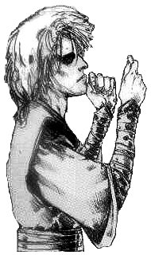
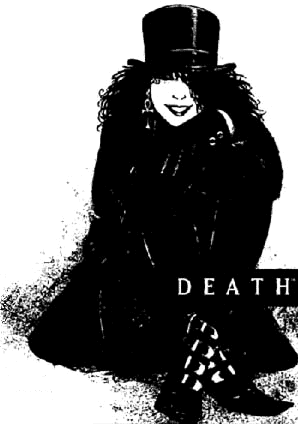

|

|

|
INTRODUCTION
|
There are seven beings that are not Gods,
that existed before humanity dreamed of Gods,
that will exist after the last God is dead.
There are seven beings that exist because,
deep in our hearts, we know that they exist.
There are seven beings that are called the Endless.
They are, in order of age, Destiny, Death, Dream,
Destruction, Desire and Despair, and Delirium,
who was once Delight.
|
The Sandman is a 75-part comic book series, written by Neil Gaiman. The central character in the series is Dream, also known as Morpheus, also known by many other names, one of the Endless. He is captured in 1916 by an occult group, and held prisoner until he escapes in 1988. The consequences of his imprisonment become clear in the course of the series.
The series consists of several storylines, all combining in one major tale, that slowly sneaks up on you as you are reading. There are also some shorter stories, but they are all consistent with and part of the main story, the story of Morpheus.
Here are some examples of what other people have written about The Sandman:
"These are great stories, and we're lucky to have them. To read Now, and maybe again Then, later on, when we need what only a good story has the power to do: to take us away to worlds that never existed, in the company of people we wish we were... or thank God we aren't."
- Stephen King, from his introduction to
World's End

"One of the basic things that runs all the way through Sandman is the male/female dichotomy, male/female friction and the difference in men's and womens's outlooks on the world. I like writing women. I feel that women are far more sensible than men and I like the sensible characters. Death is a million times more sensible than Dream himself."
- Neil Gaiman
"Neil Gaiman's SANDMAN is the most imaginative and transfixing book in mainstream comics today - and also the most radical. It tells eerie, loopy, sometimes desolating tales about capricious, ill-starred gods and frail humans, and it pulls off the rather neat trick of making Death, at long last, something to die for. Yet even in its most otherworldly moments, SANDMAN's greatest (and most disturbing) strength is that all its horrors, and all its hopes, are only as profound and familiar as the human heart itself.
To read THE SANDMAN is to read something more than an imaginative new comic: it is to read a powerful new literature, fresh with the resonance of timeless myths."
- Mikal Gilmore, Rolling Stone
"Neil Gaiman is on a plane all his own. Nobody in the field is better than this. No one has as much range, depth, and command of narrative. Gaiman is a master, and his vast, roomy stories, filled with every possible shade of feeling, are unlike anyone else's. If this isn't literature, nothing is."
- Peter Straub, from his afterword to Brief Lives